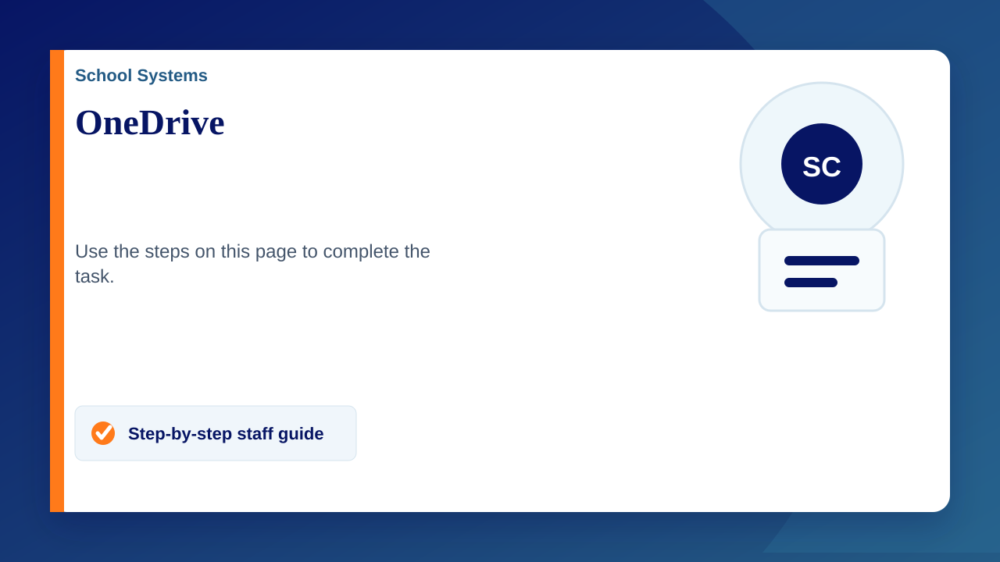
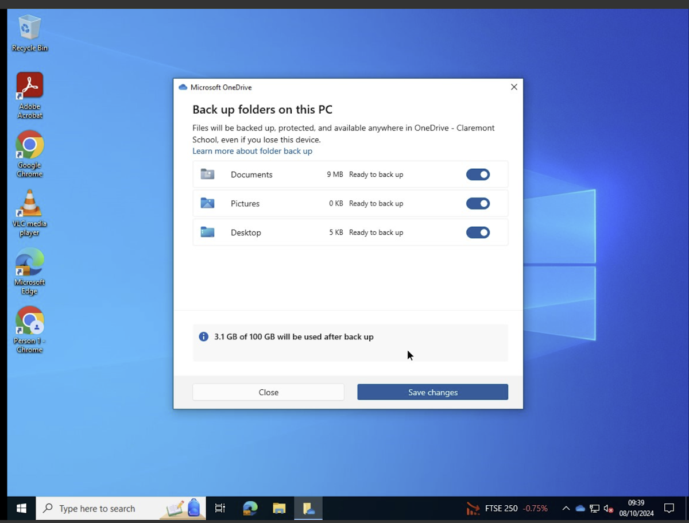

OneDrive is Microsoft's cloud storage service that allows you to store, share, sync and backup files across multiple devices. When you log in to your school computer, OneDrive automatically signs you in.
OneDrive can be found in the system tray (bottom right of the screen). If you don’t see the icon, click the up arrow to view hidden icons.
Blue cloud = Signed in
Grey cloud = not signed in. Click on the grey cloud to sign in.
Backing up your files with OneDrive
- Log into a school computer
- OneDrive will pop up asking you to backup your folders
- Make sure all 3 folders and ticked (see image)
- Save changes
Follow the steps below if you do not get this pop up ----->
- Click on the OneDrive icon (cloud)
- The message "Your IT department wants you to back up your folders" will appear.
- Click "Back up these folders"
- Follow steps 3 & 4 above
If you do not see the message "Your IT department wants you to back up your folders" then please follow the next steps listed below.
- Click on the cloud icon
- Click the settings cog and click settings
- Under the Sync and Backup section, click "Manage backup"
- Make sure all 3 folders and ticked
- Save changes
I do not see OneDrive at all
- Use the search bar to search for OneDrive (bottom left)
- Open onedrive
If you do not see onedrive after searching for it then please restart your computer. If after doing this it is still not appearing then please let us know by submitting a ticket on the service desk
